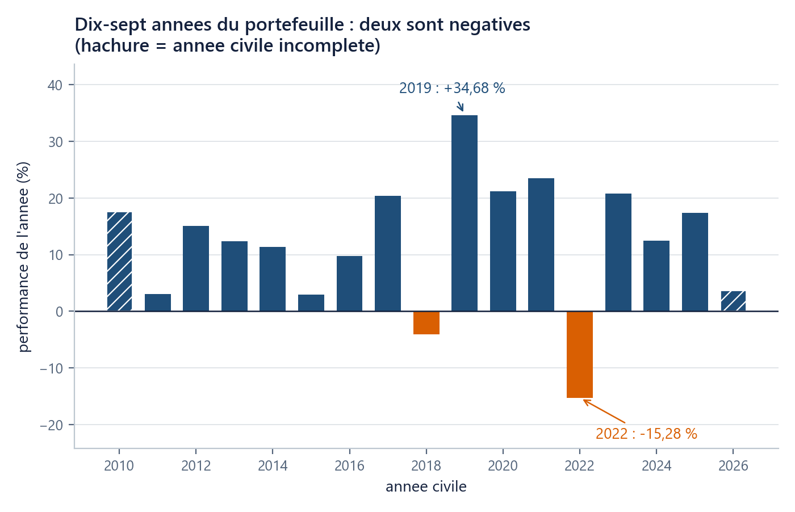

Où suis-je ? unité 4 sur 8
Les unités du chapitre
- 01Six lignes suffisent pour voir…15 min
- 02Un nom retient un résultat…20 min
- 03Une liste range des prix dans l'ordre20 min
- 04Une boucle parcourt25 min
- 05Une fonction nomme un calcul20 min
- 06Un tableau numpy remplace la boucle25 min
- 07Votre machine devient l'ordinateur du cours30 min
- 08Huit fiches d'une page suffisent…45 min
Dans cette unité
Outils : Python de zéro, sans rien installer
Une boucle parcourt, une condition choisit : la pire année sort en dix lignes
Répéter un geste sur chaque élément en gardant au passage la meilleure (ou la pire) réponse : l'accumulateur.
Durée 25 min · Prérequis u01, u02, u03 · Idée unique : répéter un geste sur chaque élément d'une suite en gardant au passage la meilleure (ou la pire) réponse rencontrée. Cette variable qui retient s'appelle un accumulateur.
La question
Le fil rouge du cours est un portefeuille : un mélange d'actifs détenus en proportions fixées. Celui-ci place 40 % de sa valeur sur le S&P 500, 20 % sur le CAC 40, et 10 % sur chacun des quatre autres : AAPL, LVMH, GLD (or), TLT (obligations d'État américaines à long terme). Ces proportions sont maintenues jour après jour, et ce portefeuille sert de sujet à tous les chapitres qui suivent.
Depuis 2010, il a traversé dix-sept années civiles. La performance d'une année, c'est la variation d'une fin d'année à la suivante : de la dernière clôture de l'année précédente à la dernière clôture de l'année, de sorte que les variations quotidiennes de janvier, celles qui séparent l'année de la précédente, ne tombent dans aucun trou. Pour le portefeuille, les six proportions sont ramenées à 40/20/10/10/10/10 chaque jour : on calcule donc la variation quotidienne du mélange, puis on compose les quelque 250 variations de l'année. Deux années sont incomplètes : 2010 démarre à la clôture du 4 janvier 2010, la première du fichier, et 2026 s'arrête au 4 septembre.
Quelle a été la pire de ces dix-sept années, et de combien ? Vous avez les données, mais les comparer une par une à l'œil demande dix-sept lectures et une mémoire de ce qu'on a vu passer. C'est exactement le travail qu'on délègue à une machine.
On essaie d’abord
Écrivez deux choses avant de coder : l'année que vous croyez la pire, et le pourcentage que vous lui attribuez.
La réponse est 2022, à −15,28 %. La meilleure année est 2019, à +34,68 %. Deux points valent d'être notés tout de suite. D'abord, beaucoup de lecteurs proposent 2020 : le décrochage de mars 2020 est spectaculaire sur la courbe d'u01, mais l'année civile 2020 s'est terminée à +21,16 % pour ce portefeuille. Ensuite, l'asymétrie : la pire année coûte 15 points, la meilleure en rapporte 35.
Les dix-sept performances, arrondies au dix-millième, sont fournies :
annees = [2010, 2011, 2012, 2013, 2014, 2015, 2016, 2017, 2018,
2019, 2020, 2021, 2022, 2023, 2024, 2025, 2026]
perfs = [0.1771, 0.0307, 0.1505, 0.1241, 0.1140, 0.0298, 0.0973, 0.2036, -0.0411,
0.3468, 0.2116, 0.2347, -0.1528, 0.2079, 0.1248, 0.1740, 0.0374]
print(len(annees), len(perfs)) # 17 17
L’idée
Répéter : la boucle for
for perf in perfs:
print(f"{perf:+.2%}")
Cette boucle for se lit littéralement : « pour chaque perf dans perfs, fais ceci ». La machine prend le premier élément de la liste, le range sous le nom perf, exécute la ligne décalée, puis recommence avec le suivant, jusqu'au dernier. Une suite qu'on peut ainsi parcourir élément par élément s'appelle un itérable ; une liste en est un, un dictionnaire aussi.
Deux points de syntaxe, non négociables : les deux-points en fin de première ligne, et le décalage des lignes suivantes vers la droite (quatre espaces). Le décalage est ce qui dit à la machine « ceci est à l'intérieur de la boucle ». C'est le même décalage qui, écrit sans raison, produisait l'IndentationError d'u02 ; ici il a un sens.
Retenir : l’accumulateur, à la main d’abord
Avant de coder, faites-le à la main sur les quatre premières valeurs (0,1771 · 0,0307 · 0,1505 · 0,1241) avec une seule case mémoire nommée pire.
| Étape | Valeur lue | pire avant |
Est-elle plus petite ? | pire après |
|---|---|---|---|---|
| départ | aucune | 0,1771 | sans objet | 0,1771 |
| 2 | 0,0307 | 0,1771 | oui | 0,0307 |
| 3 | 0,1505 | 0,0307 | non | 0,0307 |
| 4 | 0,1241 | 0,0307 | non | 0,0307 |
Le procédé tient en trois décisions : on part d'une valeur observée, on compare, on remplace seulement si c'est mieux. La variable pire est un accumulateur : une variable mise à jour à chaque tour pour retenir un résultat partiel. Vous en rencontrerez d'autres formes (une somme, un compteur) dans tout le cours.
Retenir aussi l’année : zip
pire = perfs[0]
annee_pire = annees[0]
for annee, perf in zip(annees, perfs):
if perf < pire:
pire = perf
annee_pire = annee
print(annee_pire, f"{pire:+.2%}") # 2022 -15.28%
zip(annees, perfs) parcourt les deux listes en parallèle et rend à chaque tour un couple, c'est-à-dire deux valeurs tenues ensemble, ici l'année et sa performance, que la ligne for annee, perf in ... range d'un coup sous deux noms, dans l'ordre ; c'est la forme retenue par le cours pour ce besoin. La ligne if perf < pire: ouvre une condition : les deux lignes décalées en dessous ne s'exécutent que si la comparaison est vraie. Notez que les deux mises à jour sont à l'intérieur du if : l'année et la performance doivent bouger ensemble, sinon on affiche la performance de 2022 avec l'étiquette d'une autre année.

Fabriquer un couple, et le défaire. Vous venez d'en recevoir un de
zip. On peut aussi en fabriquer un, simplement en séparant deux valeurs par une virgule, et le défaire en écrivant autant de noms à gauche du=qu'il y a de valeurs à droite :resultat = annee_pire, pire # un couple, dans cet ordre print(resultat) # (2022, -0.1528) quelle_annee, quelle_perf = resultat print(quelle_annee) # 2022Les parenthèses de l'affichage sont la marque du couple. L'ordre est celui que vous avez tapé, et rien ne vous préviendra si vous l'inversez :
pire, annee_pirerend(-0.1528, 2022), un couple parfaitement valide et faux. Le TD et le TP vous demanderont d'en rendre un ; l'ordre attendu sera écrit dans la documentation de la fonction.
Choisir entre plusieurs cas : if / elif / else
Classons chaque année en quatre catégories, pour compter au lieu de regarder.
compte = {"perte": 0, "faible": 0, "ordinaire": 0, "forte": 0}
for perf in perfs:
if perf < 0.0:
compte["perte"] += 1
elif perf < 0.05:
compte["faible"] += 1
elif perf < 0.15:
compte["ordinaire"] += 1
else:
compte["forte"] += 1
print(compte) # {'perte': 2, 'faible': 3, 'ordinaire': 4, 'forte': 8}
elif (contraction de else if) n'est testé que si tout ce qui précède a été faux ; else ramasse ce qui reste. L'ordre compte donc : la première condition vraie gagne, et une seule branche s'exécute. compte["perte"] += 1 se lit « ajoute 1 à ce qui est rangé sous cette clé » : le signe += s'appelle une affectation augmentée, et x += 1 est simplement une façon courte d'écrire x = x + 1. C'est un accumulateur, encore, mais rangé dans le dictionnaire d'u03.
Le verdict : 2 années négatives sur 17 (2018 à −4,11 % et 2022 à −15,28 %), contre 8 années au-delà de +15 %.
Le piège : l’accumulateur écrasé
C'est le bug muet le plus fréquent de ce motif, et il existe en deux formes.
Forme 1 : la mise à jour sort de la condition.
pire = perfs[0]
for perf in perfs:
pire = perf # le `if` a disparu : on garde la derniere, pas la pire
print(f"{pire:+.2%}") # +3.74%
Le résultat, +3,74 %, est la performance de 2026, la dernière de la liste. Aucun message d'erreur : un nombre plausible, faux.
Forme 2 : l'initialisation à zéro.
pire = 0.0
for perf in perfs:
if perf < pire:
pire = perf
print(f"{pire:+.2%}") # -15.28% <- juste ici, et pourtant faux
Sur ces données, la réponse est bonne : 2022 est négative, donc plus petite que 0. Testez la même boucle sur une suite où toutes les années montent :
hausses = [0.05, 0.02]
pire = 0.0
for perf in hausses:
if perf < pire:
pire = perf
print(f"{pire:+.2%}") # +0.00% <- une annee qui n'existe pas
La bonne réponse serait +2,00 %. Partir de 0 revient à ajouter en secret une année à 0 % dans les données. On part toujours d'une valeur observée : perfs[0].
Un piège d'une ligne, pour finir. Pour parcourir dix-sept éléments, on écrit range(17), qui produit 0, 1, …, 16.
for i in range(1, 18):
print(perfs[i]) # IndexError: list index out of range
range(1, 18) produit 1, 2, …, 17 : le premier élément est sauté et le dernier tour demande perfs[17], qui n'existe pas (u03). C'est le même décalage qu'en u03, sous un autre déguisement.
NameErrorde notebook. Exécutez, dans un notebook, la cellule de la boucle avant celle qui définitperfs. Vous obtenezNameError: name 'perfs' is not definedalors que la liste est écrite juste au-dessus, sous vos yeux.La raison : le noyau (kernel) est le programme qui exécute vos cellules et garde vos variables. Il les garde dans l'ordre où vous avez lancé les cellules, pas dans l'ordre où elles sont écrites sur la page. Un notebook n'est pas lu de haut en bas : il est joué dans l'ordre de vos clics.
La parade professionnelle est un réflexe : Kernel → Restart & Run All, qui vide la mémoire et rejoue tout de haut en bas. Un notebook qui ne fonctionne que dans votre ordre de clics n'est pas un résultat. Ce message ne figure dans aucun livre de Python, parce qu'il n'existe pas hors des notebooks, et c'est celui qui bloque le plus souvent en salle.
Vérifiez-vous
(a) Pourquoi initialiser pire à perfs[0] plutôt qu'à 0 ?
Réponse
(b) Combien d'années sur les dix-sept sont négatives, et lesquelles ?
Réponse
(c) (rétrospective) Votre prédiction du début : aviez-vous nommé 2020 ? Pourquoi la courbe d'u01 et le tableau de cette unité ne disent-ils pas la même chose ?
Réponse
(d) (rétrospective) Vous obtenez NameError: name 'perfs' is not defined alors que la cellule qui définit perfs est deux cellules plus bas. Que faites-vous ?
Réponse
(e) Que rend range(17), et pourquoi est-ce le bon choix pour parcourir perfs par indice ?
Réponse
Ce que vous savez faire maintenant
- Parcourir une liste avec
for, et deux listes en parallèle aveczip. - Écrire un accumulateur correct : initialisation sur une valeur observée, comparaison, mise à jour dans la condition.
- Classer et compter avec
if/elif/else, et diagnostiquer unNameErrordû à l'ordre d'exécution des cellules.
Unité suivante. Ce calcul de « la pire », vous voudrez le refaire sur le S&P 500 seul, puis sur chacun des six actifs, puis sur d'autres séries. Le recopier six fois serait une faute. L'unité u05 lui donne un nom, et un test qui le met à l'épreuve sur un cas connu.